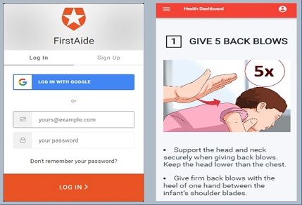
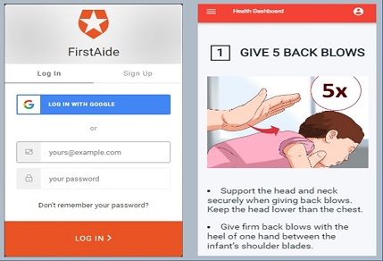
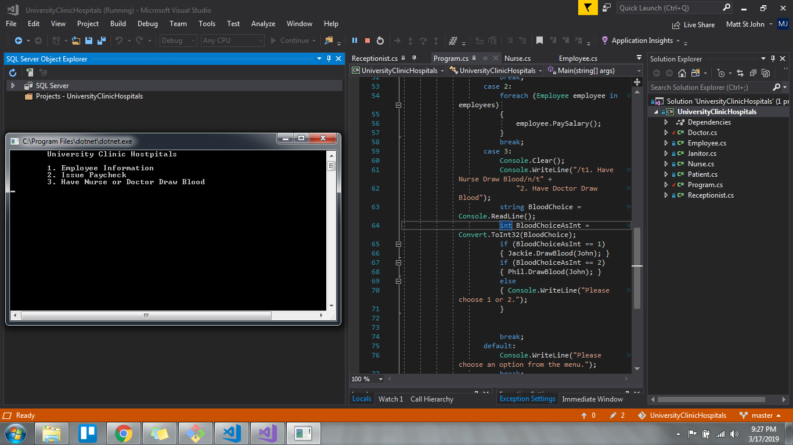
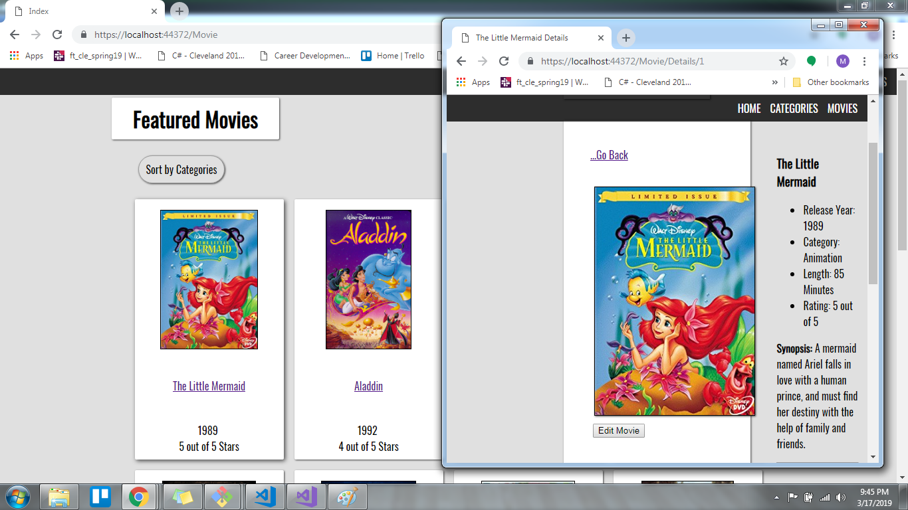

FIRST AIDE
React / MVC / SQL Mobile Website
Users are guided through emergency first aid procedures, and may track their health information on login.
The world is an awesome place, with surprises around every corner. My goal is to explore possibilities, discover new pathways, and make the world a little better every day. Curiosity, a sense of adventure, and a willingness to learn led me to visit over thirty countries so far and to live in four. The same impulses brought me to We Can Code IT in Cleveland, Ohio, where I learned about software developement from industry professionals.
* * *
C# • .NET • Active Server Pages / ASP.net • JavaScript • JQuery • Flexbox • MVC • HTML5 • CSS3 • Grid • Bootstrap • TDD • Agile (Scrum) • Object Oriented Programming (OOP) • AJAX • JSON • Restful APIs • Responsive Design / Mobile • Structured Query Language (SQL) • Relational Databases / MS SQL • Source Control / GitHub
Click on a project below to clone or download it from GitHub!
React / MVC / SQL Mobile Website
Users are guided through emergency first aid procedures, and may track their health information on login.
C# Console App
Keeps track of which employees at a hospital have been paid and directs employees to perform tasks.
MVC / SQL Website
Users can add to a list of Disney movies, and can add, edit, or delete reviews for any movie on the list.
